Sitzung - Thema: Objects First vs. Objects Later
Aufgabenstellung
1. Definition und Grundprinzipien der Objektorientierung
- Erklären Sie, was unter Objektorientierung verstanden wird, anhand von Beispielen, wie auf Informatik
Franke beschrieben.
Unter Objektorientierung ist ein Programmierparadigma zu verstehen, dass sich auf die Organisation von Code in Form von Objekten und Klassen konzentriert.
Objekte sind Instanzen von Klassen, die Entitäten in der Software darstellen. Jede Entität weist bestimmte Attribute und Methoden auf.
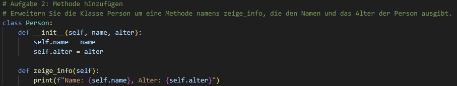
- Welche Rolle spielt die Objektorientierung in der Programmierung? Warum verwenden wir sie und welche Vorteile bietet sie?
Die Objektorientierung wird in der Programmierung insbesondere bei der Entwicklung komplexer und großer Softwareprojekte verwendet. Sie bietet einen strukturierten Ansatz, der die Organisation, Wiederverwendbarkeit und Wartbarkeit von Code erheblich verbessert. Die Objektorientierung hilft dabei, reale oder abstrakte Sachverhalte durch Objekte in einer Software zu modellieren. Durch die Aufteilung des Programmcodes in kleinere, unabhängigere Einheiten wird die Komplexität reduziert, sodass die Logik des Programms übersichtlich und leicht verständlich bleibt.
Die objektorientierte Programmierung ermöglicht es, reale Sachverhalte durch Objekte und Klassen darzustellen. Jedes Objekt entspricht dabei einer Entität aus der realen Welt, wie ein Auto, ein Mitarbeiter oder ein Kunde. So können komplexe Systeme einfacher verstanden und implementiert werden. Die Objektorientierung erlaubt die Modularisierung von Programmcode in einzelne Klassen und Objekte, die für sich genommen funktional und unabhängig sind. So können verschiedene Teile des Codes separat entwickelt , getestet und gewartet werden, was wiederum die Effizienz und Qualität des Entwicklungsprozesses verbessert. Durch Vererbung können bestehende Klassen erweitert und wiederverwendet werden, ohne den Code zu duplizieren. Dies fördert die Wiederverwendung und spart Entwicklungszeit, da bereits entwickelte und getestete Komponenten in neuen Anwendungen genutzt werden können. Auch bietet die Objektorientierung die Möglichkeit, bestehende Klassen und Objekte zu erweitern und zu modifizieren, ohne den bestehenden Code zu verändern oder zu unterbrechen. Neue Funktionalitäten können einfach hinzugefügt werden, indem neue Klassen erstellt werden, die von vorhandenen Klassen erben. Durch Kapselung können interne Details von Klassen vor dem Rest des Systems verborgen werden, wodurch das Risiko unerwarteter Nebenwirkungen reduziert wird, wenn Änderungen an einem Teil des Codes vorgenommen werden.
2. Darstellung der Ansätze "Objects First" und "Objects Later"
Wie werden die Ansätze "Objects First" und "Objects Later" jeweils definiert?
Beim “Objects First”-Ansatz wird die objektorientierte Sichtweise gleich zu Beginn vermittelt, während beim “Objects Later”-Ansatz
zunächst prozedurale Konzepte unterrichtet werden, bevor später auf die objektorientierte Sichtweise umgestiegen wird (vgl. Ehlert, 2012, S.7).
Der Objects Later-Ansatz startet mit prozeduralen Konzepten und wechselt später zur objektorientierten Sichtweise (vgl. Ehlert, 2012, S.15). Hierbei nutzt man vorhandenes Wissen als Grundlage für den schrittweisen
Übergang zur Objektorientierung (vgl. Ehlert, 2012, S.8).
Beide Ansätze behandeln jedoch die gleichen Themen, wobei der Fokus beim “Objects First”-Ansatz eher auf der Programmierung liegt,
während der “Objects Later”-Ansatz einen schrittweisen Übergang ermöglicht (vgl. Ehlert, 2012, S.7).
3. Vergleich und Kontrastierung der Ansätze
Beschreiben Sie die wesentlichen Unterschiede zwischen den Ansätzen "Objects First" und
"Objects Later". Welche Gemeinsamkeiten lassen sich erkennen?
Die Ansätze “Objects First” und “Objects Later” unterscheiden sich hauptsächlich in der Reihenfolge der vermittelten Themen im Informatik-Anfangsunterricht.
Beim Objects First-Ansatz beginnt man mit der objektorientierten Sichtweise und fokussiert sich auf das Verständnis von Objekten und Klassen von Anfang an.
Themen wie Klassenimplementierung, Objekterzeugung und Methoden stehen hierbei im Mittelpunkt.
Beim Objects Later-Ansatz startet man dagegen mit der prozeduralen Sichtweise und wechselt später zur objektorientierten Sichtweise. Dabei nutzt man vorhandenes
Wissen über prozedurale Konzepte, wie z.B. Schleifen, Bedingungen, als Grundlage. Themen wie Vererbung, Attributierung und Polymorphismus werden im Gegensatz zum
Objects First-Ansatz erst später behandelt. Somit handelt es sich beim sogenannten Objects Later-Ansatz um den schrittweisen Übergang von prozeduraler zu
objektorientierter Programmierung.
Beide Ansätze vermitteln letztendlich die gleichen Themen der objektorientierten Programmierung. Die Wahl zwischen den Ansätzen hängt von pädagogischen Zielen,
Lehrplänen und individuellen Präferenzen ab. Beide Ansätze haben Vor- und Nachteile, und es gibt keine allgemeingültige Antwort, welcher besser ist. Es kommt
auf den Kontext und die Lernenden an. Die Diskussion über den besten Ansatz ist weiterhin aktuell und wird von verschiedenen Faktoren beeinflusst.
4. Bewertung der Vor- und Nachteile
Diskutieren Sie die potenziellen Vor- und Nachteile beider Lehrmethoden. Welche Implikationen könnten
diese für den Lernerfolg in der objektorientierten Programmierung haben?
Objects-First
Vorteile
Schüler lernen bereits früh die Konzepte der objektorientierten Programmierung kennen. Das direkte Erstellen von Objekten kann motivierend sein und den praktischen
Bezug erhöhen. Somit können Schüler eine zusammenhängende Sichtweise auf die objektorientierte Programmierung entwickeln.
Nachteile
Anfänger könnten mit der Komplexität der Objektorientierung überfordert sein, da Schüler hierfür abstrakte Konzepte wie Klassen und Vererbung verstehen müssen.
Möglicherweise könnten Begriffe wie “Klasse” und “Objekt” miteinander verwechselt werden, was wiederum zu Verwirrungen führen kann.
Objects-Later
Vorteile
Schüler haben bereits Erfahrung mit prozeduraler Programmierung, sodass auf bereits erworbenes Wissen aufgebaut werden kann. Dies erlaubt eine sukzessive Hinführung
zur objektorientierten Programmierung.
Nachteile
Schüler müssen sich von prozeduralen Denkweisen auf die Objektorientierung umstellen, was zu Verständnisproblemen führen kann. Insbesondere die Erzeugung von Objekten
aus einer Klasse kann irritierend wirken.
Die Wahl zwischen Objects-First und Objects-Later hängt von Faktoren, wie Lernziele, Zielgruppe und den verfügbaren Ressourcen ab. Die Berücksichtigung dieser Aspekte
könnte am effektivsten sein, um den Lernerfolg in der objektorientierten Programmierung zu maximieren.
Python Programmieraufgaben zum Thema Koordinatensystem und Objektorientierung
Aufgabe 1: Einzelne Auto-Bewegungen im Koordinatensystem
Schreiben Sie einen Python-Code, in dem ein Auto von der Startposition (0,0) zuerst zu (5,0), dann zu (5,5), anschließend zu (0,5) und schließlich zurück zu (0,0) fährt.
Nach jeder Bewegung soll die aktuelle Position des Autos ausgegeben werden.
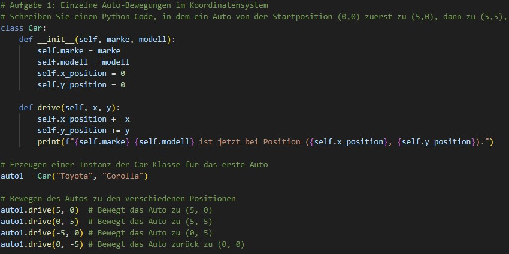
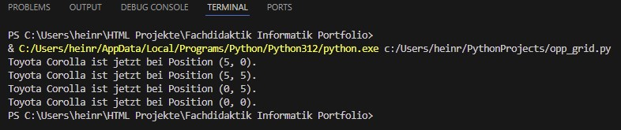
Aufgabe 2: Bewegung eines zweiten Autos im Koordinatensystem
Ergänzen Sie den Code aus Aufgabe 1, indem Sie ein zweites Auto hinzufügen, das eine andere Route abfährt. Dieses Auto soll von (1,1) starten und dann einzeln zu den Punkten
(1,4), (4,4), (4,1) und schließlich zurück zu (1,1) fahren. Jede Bewegung soll einzeln angegeben werden, um das Verständnis zu erleichtern.
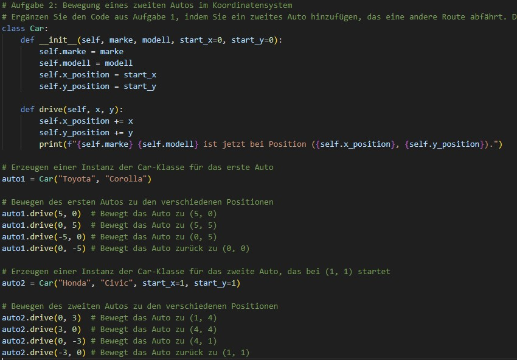
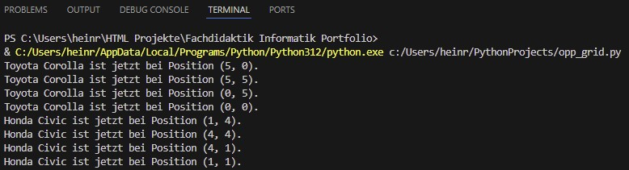
Wiederholungsaufgaben: Entwicklung eines interaktiven Tagebuchs
Sie entwickeln ein einfaches, interaktives Tagebuchprogramm in Python, das verschiedene grundlegende Konzepte des Programmierens nutzt. Jede Aufgabe baut auf der vorherigen auf
und erweitert das Tagebuch um neue Funktionen. Für jede Aufgabe sind die entsprechenden Tutorials verlinkt. Testen Sie nach jeder Aufgabe, ob die Funktion gegeben ist!
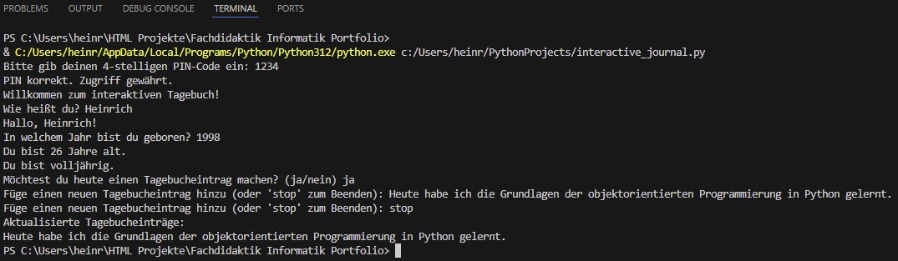
Installation und Test von Kivy
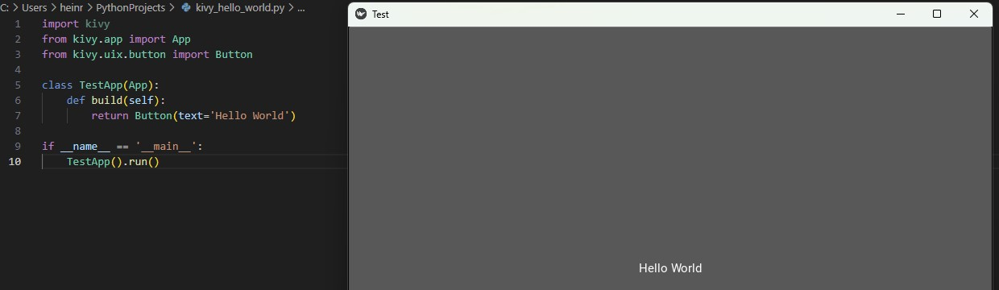Grundlegende Struktur einer Kivy-App
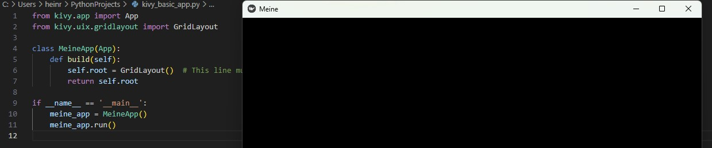
Kivy-Aufgaben
Aufgabe 1: Hinzufügen von Alters- und Wohnortabfragen
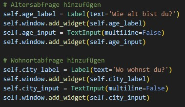
Aufgabe 2: Anzeige aller gesammelten Informationen
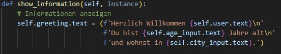
Aufgabe 3: Ergänzung eines "Programm Beenden"-Buttons
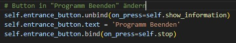
Bis zur Aufgabe 3 sieht die erstellte GUI wie folgt aus:
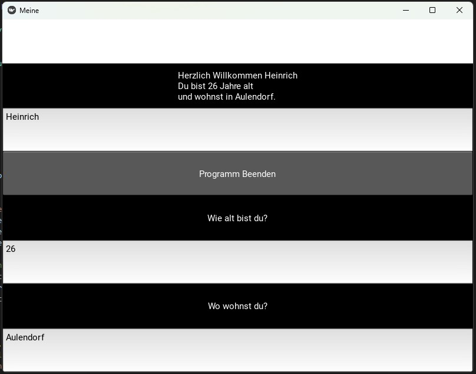
Aufgabe 4: Implementierung von weiteren Elementen aus dem interaktiven Tagebuch
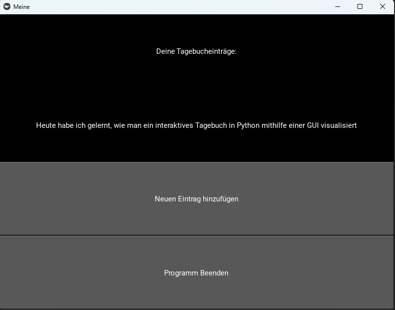
Dieser Screenshot zeigt die Erweiterung des Codebeispiels aus Aufgabe 1-3, um die Funktionalitäten des interaktiven Tagebuchs.